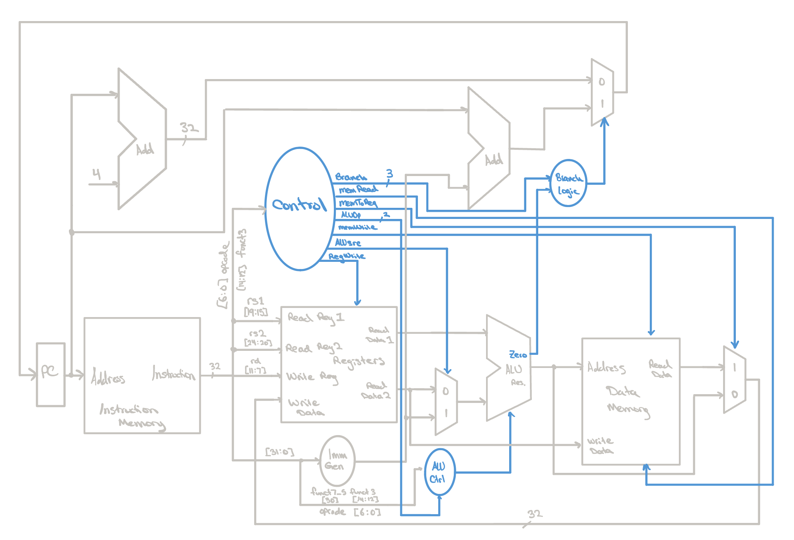
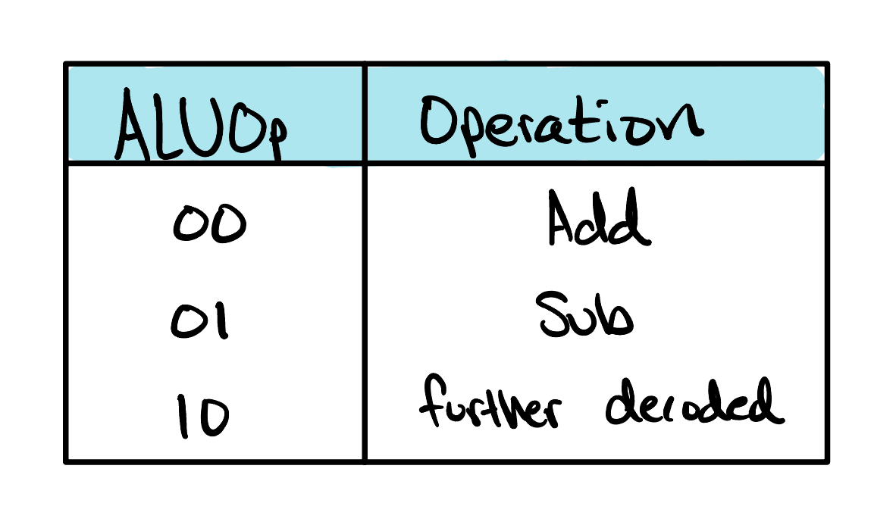
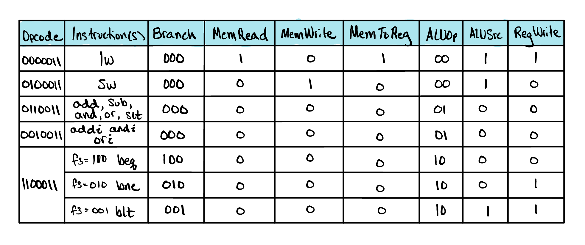
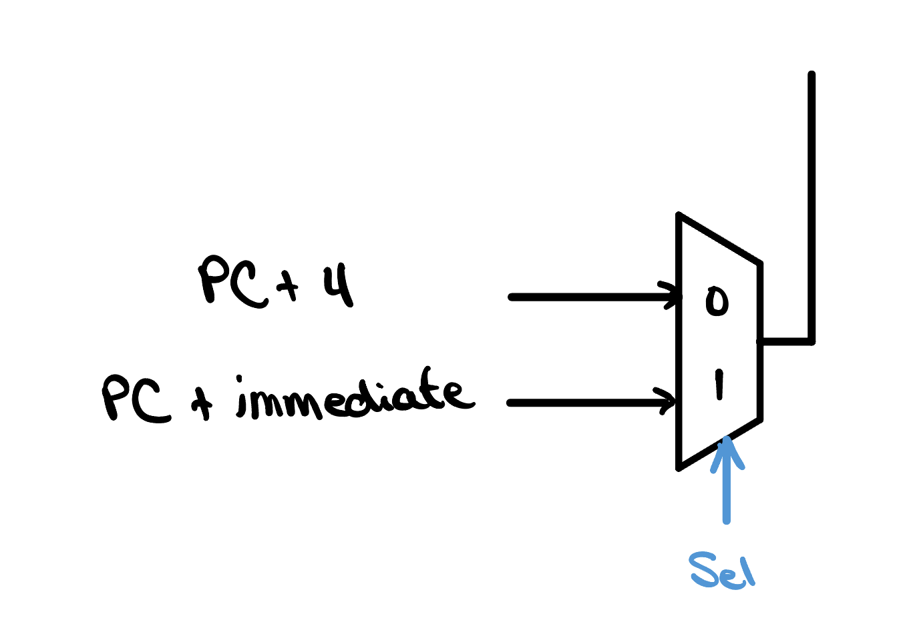

The Control Unit
A control unit is the CPU’s decision-maker. It interprets each instruction and generates the control signals needed to execute it. These signals tell the processor’s components what to do and when to do it. Without the control unit, the CPU is nothing but a tangle of wires.

The ALU Control
Before we can dive into how the main control unit works, it’s important that we have our ALU operating smoothly. Luckily for us, we’ve already constructed the ALU’s datapath, but for it to actually perform the tasks we want, we need to control it. While we could theoretically build a single control unit that decodes every instruction bit directly into ALU commands, it’s better to abstract the ALU’s logic away from the rest of the datapath so each control unit answers just one question, potentially making it easier to catch bugs in the future.
The CPU datapath we built in the last lesson can handle a variety of
instructions. Instead of asking the ALU Control Unit to decode an entire
32-bit instruction, the main control unit gives it a simple two-bit signal
called ALUOp. This signal tells the ALU Control Unit what
class of instruction it’s dealing with:

- 00 → Memory instructions (lw/sw) always require an address calculation, so perform addition.
- 01 → Branch instructions (beq/bne) compare two registers by subtracting them.
-
10 → Arithmetic and logical instructions require a
closer inspection of the instruction’s
funct3(and sometimesfunct7) fields to determine the exact operation.
module alu_control (
input wire [2:0] funct3,
input wire funct7Bit5,
input wire [6:0] opcode,
input wire [1:0] ALUOp,
output reg [3:0] ALUControl
);
wire isRtype;
assign isRtype = (opcode == 7'b0110011);
always @(*) begin
case (ALUOp)
2'b00: ALUControl = 4'b0010; // addition (lw/sw)
2'b01: ALUControl = 4'b0110; // subtraction (beq/bne)
2'b10: begin // R-type and I-type decode (and blt)
case (funct3)
3'b000: ALUControl = (funct7Bit5 && isRtype) ? 4'b0110 : // sub
4'b0010; // add/addi
3'b111: ALUControl = 4'b0000; // and/andi
3'b110: ALUControl = 4'b0001; // or/ori
3'b010: ALUControl = 4'b0111; // slt
3'b100: ALUControl = 4'b0111; // blt
default: ALUControl = 4'b0000;
endcase
end
default: ALUControl = 4'b0000;
endcase
end
endmodule
When ALUOp equals 10, the ALU Control Unit
becomes a small decoder. It examines the instruction’s function
fields and translates them into the four-bit control signal that drives
the ALU. For example, a funct3 value of
111 selects a bitwise AND operation, 110 selects OR, 010 selects
set-less-than, and 000 could mean either ADD or SUB. In that final case,
the control unit checks bit 5 of funct7;
if it’s an R-type instruction with that bit set, the ALU performs
subtraction. Otherwise, it performs addition.
This layered approach keeps responsibilities clean. The main control unit decides what kind of instruction is executing, while the ALU Control Unit decides which arithmetic or logical operation the ALU should perform. Each module stays small, focused, and much easier to test than one giant decoder.
Go back Forgot how the ALU works? See how the ALUControl bits decide which operation it performs.The Main Control Unit
In the last section we saw how the ALU learns which operation to perform.
The main control classifies each instruction into a coarse
ALUOp category, and a dedicated ALU control
module refines that category into an exact operation code. But that raises
a natural question: where does ALUOp come
from in the first place, and who is steering everything else? After all,
the ALU is only one piece of the datapath. Memory needs to know whether it
is being read or written, the register file needs to know whether to save
a result, and the multiplexers need to know which inputs to pass along.
module sc_cpu_control (
input wire [6:0] opcode,
input wire [2:0] funct3,
output reg [2:0] branch,
output reg memRead,
output reg memToReg,
output reg [1:0] ALUOp,
output reg memWrite,
output reg ALUsrc,
output reg regWrite
);
always @(*) begin
branch = 3'b000;
memRead = 1'b0;
memToReg = 1'b0;
ALUOp = 2'b00;
memWrite = 1'b0;
ALUsrc = 1'b0;
regWrite = 1'b0;
case (opcode)
7'b0000011: begin // lw
memRead = 1'b1; // read word from memory
memToReg = 1'b1; // send word to register
ALUOp = 2'b00; // addition
ALUsrc = 1'b1; // use immediate as offset
regWrite = 1'b1; // write word to register
end
7'b0100011: begin // sw
memWrite = 1'b1; // write word to memory
ALUOp = 2'b00; // addition
ALUsrc = 1'b1; // use immediate as offset
end
endcase
end
endmodule
The main control is the unit that answers all of these questions at once.
By examining nothing more than the instruction’s
opcode, it produces the complete set of
signals that configure the datapath for a single instruction:
memRead and
memWrite for memory access,
ALUsrc to choose between a register and the
immediate, memToReg to choose what gets
written back, regWrite to permit that
writeback, ALUOp for the ALU, and
branch for anything that might redirect the
program counter.
Conceptually, the main control works like a lookup table. It holds no state and performs no computation of its own. Given an instruction class, it simply recalls the recipe of signals that class requires and asserts them, leaving everything else quiet. A helpful way to think about it is that the datapath is a machine full of switches, and each instruction comes with a wiring diagram for which switches should be flipped. The main control is the component that reads the diagram and flips them. Because every signal starts from a safe, do-nothing baseline and is only raised when an instruction calls for it, no instruction can inherit stray behavior from another, and anything the unit does not recognize passes through harmlessly.

The Branch Logic
In the table above, we hinted at some of the ideas behind the branch logic block in our datapath. It turns out this logic is actually quite simple, and doesn’t need more than a Verilog case statement to work.
In this CPU, we want to be able to handle the beq, bne, and
blt instructions, all of which use the same
opcode, 1100011. Our control unit
differentiates these instructions by taking a closer look at their
funct3 bits. Together, the
opcode and
funct3 fields can uniquely identify which
branch is being executed. Each instruction carries its own
funct3 code: beq uses 000,
bne uses 001, and blt uses 100.
Since there are three different branch instructions, one simple way to encode
which operation to perform is with a one-hot encoded signal. In our design,
this signal is called branch, and it helps the
datapath choose whether it should increment the PC by 4, or increment it by
an immediate specified in a branch instruction.
Each branch instruction lights up its own bit of
branch, while every non-branch instruction
leaves it at its default of 000 — telling the datapath to simply move on
to the next instruction at PC + 4. When one of those bits is set, the
datapath checks the matching condition against the ALU’s result, and if
it holds, redirects the program counter by the branch’s immediate
instead.
always @(*) begin
branch = 3'b000;
case (opcode)
7'b1100011: begin
case (funct3)
3'b000: begin // beq
branch = 3'b100;
ALUOp = 2'b01; // subtraction
end
3'b001: begin // bne
branch = 3'b010;
ALUOp = 2'b01; // subtraction
end
3'b100: begin // blt
branch = 3'b001;
ALUOp = 2'b10; // later decoded to slt
end
default: branch = 3'b000;
endcase
end
endcase
endCheck Yourself
Given the one-hot coding for the branch signal above, what would be the correct Verilog assign statement for the Sel signal below?
